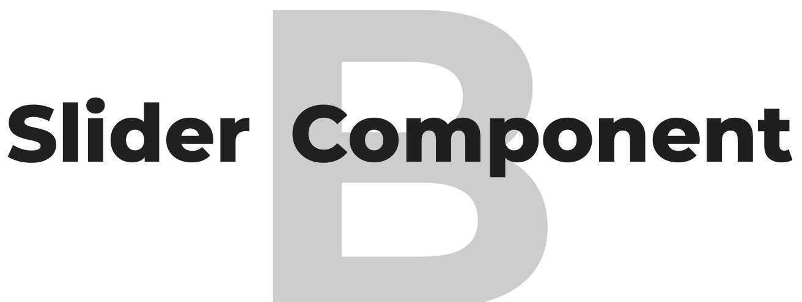

Your star will make a big difference for this project.

This free open source slider component was created to demonstrate the difference between two images. For example, to show the difference before and after applying photo effects or filters, to compare photos of rooms before and after construction, or to show landscape changes over time. The component is well suited for news portals, artists, or design portfolios.
Because it is a web component, it is compatible with almost any JS framework, web application, or design system. In addition, this component offers a wide range of settings - the examples section provides many ideas and styling techniques. The setup and settings documentation is available on the component's GitHub page.